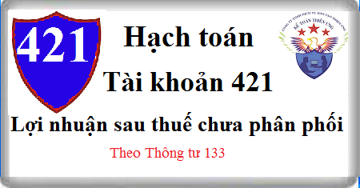

Hướng dẫn cách hạch toán Tài khoản 421 theo thông tư 133, Cách hạch toán Lợi nhuận sau thuế chưa phân phối, khi chia lợi nhuận, kết chuyễn lãi lỗ năm trước, kết chuyển lợi nhuận sau thuế đầu năm …
1. Nguyên tắc kế toán Tài khoản 421 - Lợi nhuận sau thuế chưa phân phối
a) Tài khoản này dùng để phản ánh kết quả kinh doanh (lãi, lỗ) sau thuế thu nhập doanh nghiệp và tình hình phân chia lợi nhuận hoặc xử lý lỗ của doanh nghiệp.
b) Việc phân chia lợi nhuận hoạt động kinh doanh của doanh nghiệp phải đảm bảo rõ ràng, rành mạch và theo đúng chính sách tài chính hiện hành.
c) Phải hạch toán chi tiết kết quả hoạt động kinh doanh của từng năm tài chính (năm trước, năm nay), đồng thời theo dõi chi tiết theo từng nội dung phân chia lợi nhuận của doanh nghiệp (trích lập các quỹ, bổ sung Vốn đầu tư của chủ sở hữu, chia cổ tức, lợi nhuận cho các cổ đông, cho các nhà đầu tư).
d) Khi áp dụng hồi tố do thay đổi chính sách kế toán và điều chỉnh hồi tố các sai sót trọng yếu của các năm trước nhưng năm nay mới phát hiện dẫn đến phải điều chỉnh số dư đầu năm phần lợi nhuận chưa phân phối thì kế toán phải điều chỉnh tăng hoặc giảm số dư đầu năm của TK 4211 “Lợi nhuận sau thuế chưa phân phối năm trước” trên sổ kế toán và điều chỉnh tăng hoặc giảm chỉ tiêu “Lợi nhuận sau thuế chưa phân phối” trên Báo cáo tình hình tài chính.
Đối với tất cả các doanh nghiệp, khi phân phối lợi nhuận cần cân nhắc đến các khoản mục phi tiền tệ nằm trong lợi nhuận sau thuế chưa phân phối có thể ảnh hưởng đến luồng tiền và khả năng chi trả cổ tức, lợi nhuận của doanh nghiệp, như:
- Khoản lãi do đánh giá lại tài sản mang đi góp vốn; do đánh giá lại các khoản mục tiền tệ có gốc ngoại tệ; do đánh giá lại các công cụ tài chính;
- Các khoản mục phi tiền tệ khác…
e) Trong hoạt động hợp đồng hợp tác kinh doanh (BCC) chia lợi nhuận sau thuế, doanh nghiệp phải theo dõi riêng kết quả của BCC làm căn cứ để phân phối lợi nhuận hoặc chia lỗ cho các bên. Doanh nghiệp là bên nộp và quyết toán thuế TNDN thay các bên trong BCC chỉ phản ánh phần lợi nhuận tương ứng với phần của mình được hưởng, không được phản ánh toàn bộ kết quả của BCC trên tài khoản này trừ khi có quyền kiểm soát đối với BCC.
g) Đối với cổ tức ưu đãi phải trả: Doanh nghiệp phải căn cứ vào bản chất của cổ phiếu ưu đãi để hạch toán theo nguyên tắc:
- Nếu cổ phiếu ưu đãi được phân loại là nợ phải trả, kế toán không ghi nhận cổ tức phải trả từ lợi nhuận sau thuế chưa phân phối;
- Nếu cổ phiếu ưu đãi được phân loại là vốn chủ sở hữu, khoản cổ tức ưu đãi phải trả được kế toán tương tự như việc trả cổ tức của cổ phiếu phổ thông.
h) Doanh nghiệp phải theo dõi trong hệ thống quản trị nội bộ số lỗ tính thuế và số lỗ không tính thuế, trong đó:
- Khoản lỗ tính thuế là khoản lỗ tạo ra bởi các khoản chi phí được trừ khi xác định thu nhập chịu thuế;
- Khoản lỗ không tính thuế là khoản lỗ tạo ra bởi các khoản chi phí không được trừ khi xác định thu nhập chịu thuế.
Khi chuyển lỗ theo quy định của pháp luật, doanh nghiệp chỉ được chuyển phần lỗ tính thuế làm căn cứ giảm trừ số thuế phải nộp trong tương lai.
2. Kết cấu và nội dung Tài khoản 421 - Lợi nhuận sau thuế chưa phân phối
Bên Nợ:
- Số lỗ về hoạt động kinh doanh của doanh nghiệp;
- Trích lập các quỹ của doanh nghiệp;
- Chia cổ tức, lợi nhuận cho các chủ sở hữu;
- Bổ sung vốn đầu tư của chủ sở hữu.
Bên Có:
- Số lợi nhuận thực tế hoạt động kinh doanh của doanh nghiệp trong kỳ;
- Số lỗ của cấp dưới được cấp trên cấp bù;
- Xử lý các khoản lỗ về hoạt động kinh doanh.
Tài khoản 421 có thể có số dư Nợ hoặc số dư Có.
Số dư bên Nợ: Số lỗ hoạt động kinh doanh chưa xử lý.
Số dư bên Có: Số lợi nhuận sau thuế chưa phân phối hoặc chưa sử dụng.
Tài khoản 421 - Lợi nhuận sau thuế chưa phân phối, có 2 tài khoản cấp 2:
- Tài khoản 4211 - Lợi nhuận sau thuế chưa phân phối năm trước: Phản ánh kết quả hoạt động kinh doanh, tình hình phân chia lợi nhuận hoặc xử lý lỗ thuộc các năm trước. Tài khoản 4211 còn dùng để phản ánh số điều chỉnh tăng hoặc giảm số dư đầu năm của TK 4211 khi áp dụng hồi tố do thay đổi chính sách kế toán và điều chỉnh hồi tố các sai sót trọng yếu của năm trước, năm nay mới phát hiện.
Đầu năm sau, kế toán kết chuyển số dư đầu năm từ TK 4212 “Lợi nhuận sau thuế chưa phân phối năm nay” sang TK 4211 “Lợi nhuận sau thuế chưa phân phối năm trước”.
- Tài khoản 4212 - Lợi nhuận sau thuế chưa phân phối năm nay: Phản ánh kết quả kinh doanh, tình hình phân chia lợi nhuận và xử lý lỗ của năm nay.
3. Cách hạch toán Lợi nhuận sau thuế chưa phân phối Tài khoản 421:
a) Cuối kỳ kế toán, kết chuyển kết quả hoạt động kinh doanh:
- Trường hợp lãi, ghi:
Nợ TK 911 - Xác định kết quả kinh doanh
Có TK 421- Lợi nhuận sau thuế chưa phân phối (4212).
- Trường hợp lỗ, ghi:
Nợ TK 421 - Lợi nhuận sau thuế chưa phân phối (4212)
Có TK 911 - Xác định kết quả kinh doanh.
b) Khi có quyết định hoặc thông báo trả cổ tức, lợi nhuận được chia cho các chủ sở hữu, ghi:
Nợ TK 421 - Lợi nhuận sau thuế chưa phân phối
Có TK 338 Phải trả phải nộp khác (3388).
Khi trả tiền cổ tức, lợi nhuận, ghi:
Nợ TK 338 - Phải trả, phải nộp khác (3388)
Có các Tài khoản 111, 112,... (số tiền thực trả).
c) Trường hợp Công ty cổ phần trả cổ tức bằng cổ phiếu (phát hành thêm cổ phiếu từ nguồn Lợi nhuận sau thuế chưa phân phối) ghi:
Nợ TK 421 - Lợi nhuận sau thuế chưa phân phối
Nợ TK 4112 - Thặng dư vốn cổ phần (số chênh lêch giữa giá phát hành thấp hơn mệnh giá)
Có TK 4111 Vốn góp của chủ sở hữu (mệnh giá)
Có TK 4112 - Thặng dư vốn cổ phần (số chênh lêch giữa giá phát hành cao hơn mệnh giá) (nếu có).
d) Các doanh nghiệp không phải là công ty cổ phần khi quyết định bổ sung vốn đầu tư của chủ sở hữu từ lợi nhuận hoạt động kinh doanh (phần lợi nhuận để lại của doanh nghiệp), ghi:
Nợ TK 421 - Lợi nhuận sau thuế chưa phân phối
Có TK 4111 - Vốn góp của chủ sở hữu (4118)
đ) Khi trích quỹ từ kết quả hoạt động kinh doanh (phần lợi nhuận để lại của doanh nghiệp), ghi:
Nợ TK 421 - Lợi nhuận sau thuế chưa phân phối
Có TK 418 Các quỹ khác thuộc vốn chủ sở hữu.
Có TK 353 Quỹ khen thưởng phúc lợi (3531, 3532, 3534).
e) Đầu năm tài chính, kết chuyển lợi nhuận sau thuế chưa phân phối năm nay sang lợi nhuận sau thuế chưa phân phối năm trước, ghi:
- Trường hợp TK 4212 có số dư Có (lãi), ghi:
Nợ TK 4212 - Lợi nhuận sau thuế chưa phân phối năm nay
Có TK 4211 - Lợi nhuận sau thuế chưa phân phối năm trước.
- Trường hợp TK 4212 có số dư Nợ (lỗ), ghi:
Nợ TK 4211 - Lợi nhuận sau thuế chưa phân phối năm trước
Có TK 4212 - Lợi nhuận sau thuế chưa phân phối năm nay.
--------------------------------
Chúc bạn thành công! Bạn muốn học hoàn thiện sổ sách, lập Báo cáo tài chính, Quyết toán thuế thực tế, chuyên sâu có thể tham gia: Lớp học thực hành kế toán tại Kế toán Diệu Tâm.
